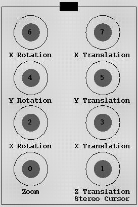

This function allows you to view your data in a way so that a sense of the entire volume is obtained in a single image. This is contrast to the default method of looking at a volume through 2-D slices of the volume. The way this function works is by creating projections of your 3-D volume. By making several of these projections at different angles around a tilt axis and incrementally stepping through them, you can obtain a better perception of the three-dimensional aspect of your data.
The main menu controls an interactive projection window. The mouse and, on those systems that have it, dial box are used to rotate, translate and zoom in and out about the areas of interest. Projections can be made using various methods described below. A projection series can also be saved using the "make a movie" option.
Overview |
Basic Steps |
Preload Region |
Scaling |
Opacity Scaling |
Flipped View |
Making a Movie |
Erase Function |
Mouse and Dials |
Lighting |
Gradient Modulation
3DModel | Blend Colors | Priism
Enter a 3-D data stack either as a window number or file name. A file can be selected by using the file selection popup or by just entering it by hand. If a window number is to be entered, an initial scaling can be estimated by scaling the input window before the window number is entered. Don't worry about it too much though because the scaling can be adjusted later while looking at the projected image.
This is the window number of the output interactive projection window. It cannot be a filename and is set by default to the next available window.
The program has an option to flip the data so that you can see it from another angle in the form of a data stack. The only reason you would want to enter a window number here is if you already have a flipped window which you want the program to know about so that it can show you the selected region in the flipped view.
Select the wave(s) of data you want to view. You should be able to view multiple waves. If the reaction is slow when turning or translating, you might want to fiddle with the sampling.
If you have multiple time data, the time entered as the starting time will be used for the interactive projections. If you make a movie, a series will be made for each time from start to end times.
The Options pulldown contains some extra functions to aid in viewing the data. Each function is described in separately; follow the links from the Overview section for details. The one option you might want to make use of before opening the output window is the "set preload region" option. If you have a huge data set, you might want to load only a portion of it at any one time to avoid so much memory swapping. You will likely want to use the scale input option soon after opening your output window as well.
Click on the Select Region function button then enter the input window to select the region. The region selected defines the input center and the output size. You can also define these by entering them directly. When the view is turned around, it is like you have a window moving around the center point. This means your view cube can be cut out at any angle instead of just the initial input selected region. Graphics will be drawn to the input window to show the current chunk of data being viewed. This differs from the old volume viewer which had the window staying still while the cube of data rotated. With the current method, the depth of the projection is uniform and is defined by the output z size. When a region is selected using the input window, the view angle is reset to 0,0,0.
By default, the input center will be the center of the input data volume. The center can be modified in three different ways.
By default the output size is the size such that the entire input data set can be rotated without clipping. The output size can be modified either by using the Select Region button in the input window or by entering the x, y, and z sizes directly into this field. The x and y sizes determine the width and height of the output window and also set, in conjunction with the zoom factor, the x and y dimensions of the viewed block from the data set. The z size determines the number of voxels factored into the projection.
Zoom can be used to help with orientation when zooming out, and to improve resolution when zooming in. Zoom can be changed by entering a value by hand or by using dial 0 on the dial box.
Select a method with which to generate your projections. There are currently five different methods. A good way to think about how these projections are created is to imagine parallel rays that shoot through your 3-D data volume. The different methods here represent the different ways that are used to sum up the values of those voxels that the ray encounters as it traverses through your 3-D data volume.
Sampling is used when rotating and translating images to try to keep the response from being unbearably slow. When the mouse button is released, the best quality image is calculated with no downsampling. When a new output size is set, the sampling is automatically set in xy and z to values that have been determined by trial and error to be reasonable, but one will likely want to play with these to get the best compromise between image quality and speed. The number in the pulldown is simply the downsampling factor: if the menu is set to two, for instance, then in the projection along a ray only every other voxel is considered.
When Volume Viewer uses a VolumePro 1000 board to do the rendering, the sampling parameters are not used.
This field is used to input the current view angle and to report the current angle as it is changed using the mouse or dials,
Press the "Reset" button next to the field with the current view angle to reset the view angle and input center so that the view looks down the z axis and is centered on the loaded region. Pressing the "r" key while the mouse pointer is in the image window has the same effect as pressing the "Reset" button.
Toggle on the stereo button to see the projections in stereo pairs. Depending on if you are using the hardware stereo (wall-eyed) or just crossing your eyes, the stereo angle will be set differently. Use -6.0 for wall-eyed. 6.0 for cross-eyed. When the stereo view is on, the cursor becomes a stereo cursor. A window will pop up beside the Priism panel which reports the current position of the stereo cursor in real space. There are two functions that currently make use of the stereo cursor: the Erase function in the Options menu, and 3DModel. Please see the Mouse and Dials section for information on control of the stereo cursor.
Please note that to use hardware stereo, you'll have to change the Priism preferences to enable stereo in a window; changing that preference requires you to restart Priism for the change to take effect.
This field reports the progress of reading in and scaling the input data or of calculating a projection.
Pressing the Do it button will open up the interactive window. Once the window is open you can start using the mouse or dials to rotate or translate the view.
The interactive window works by loading (and scaling) a chunk of data that is usually somewhat bigger than the data that is viewed at any one time. The user can then translate around to the various structures in this bigger data set without time being taken to load and scale each new area. By default, the whole data set is loaded. If your data set is huge, you may want to load a smaller portion of the dataset. Use the "Select Load Region" button to select the region to load, the same way as is done in the main menu for the initial view region. The starting XYZ position and total XYZ size of the region to load are reported in this menu. These values can be entered directly in these fields if desired instead of selecting a box in the input window. When the correct values are set, press "Load" to set the new load region.
For the purposes of the projection calculation, Volume Viewer scales the input data to fall within a fixed range. Select the "scale input" entry from Volume Viewer's Options menu to open a dialog to control how this scaling is done. The scaling dialog functions almost identically to the scaling dialog for normal image windows: a histogram of the input data is shown and a connected set of lines with three control points is shown to illustrate the scaling function. To manipulate a control point, position the mouse pointer over it, press and hold the left mouse button, and then move the mouse horizontally. When done, release the mouse button, the portion of the volume currently in view is then rescaled and a new projection calculated. Use leftmost control point to adjust the input intensity level that is the lower bound for the scaled region: input values below that are scaled to zero or to the maximum possible value. Use the rightmost control point to adjust the input intensity level that is upper bound for the scaled region: input values at or beyond that intensity are scaled to the maximum possible or to zero. Use the middle control point to shift both the minimum and maximum by the same amount. To adjust the shape of the scaling curve between the minimum and maximum value, position the mouse pointer over the curve between the minimum and maximum point (but not near any of the three control points), press and hold the left mouse button, and then move the mouse vertically. When done release the mouse button.
The other controls in the scaling dialog are:
With the progressive and RGB/opacity projection methods, each voxel has an opacity associated with it that determines how much it obscures the voxels behind it. The opacity scaling entry in Volume Viewer's Options menu opens a dialog that allows you to adjust how this opacity is calculated.
The dialog displays a graph of the opacity (y axis) versus the scaled voxel intensity (x axis; for the RGB/opacity method the voxel intensity is the intensity in the last wavelength). To adjust the curve, position the mouse pointer over one of the points along the graph, press and hold the left mouse button, and then drag the mouse; when finished release the mouse button. To add a control point to the curve, position the mouse pointer over a control point adjacent to the area where you want the new control point, press the right mouse button, and, in the menu that appears, select "Insert before" to add the new point to the left of the selected point or select "Insert after" to add the new point to the right of the selected point. To delete a control point, position the mouse pointer over a control point, press the right mouse button, and select "Delete" from the menu that appears. To restore the curve to a linear relationship with the least intense values completely transparent and the most intense values completely opaque, press the "Reset" button at the bottom of the dialog.
Selecting this from the pulldown, opens a new window and creates a flipped view of the input data. This stack of two dimensional sections has been rotated 90 degrees around the X axis. This is just to give you another perspective of the data. It is helpful to see the z direction of the data when trying to select a good region to examine. The Flipped Data Window field will be updated with the window number opened by this function. When a region is selected, both the input window and the flipped view will have graphics drawn to show the currently selected region.
The mouse and, on systems that have them, dials are used to orient your view of the data, and to control and select with the stereo cursor when in stereo mode.
The left mouse button is reserved for selecting points or regions within the output window. Currently the erase option from Volume Viewer's Options menu and the Priism application, 3DModel, make use of the left mouse button.
The middle mouse button is used for rotating the viewed region. To rotate, position the mouse pointer over the image of the projection result, press and hold the middle mouse button, and then drag the mouse in the direction you wish to rotate. Release the middle mouse button to stop rotating. If the "rotate/translate in z" toggle button is on in the Volume Viewer dialog (to turn this button on or off, either press it directory or press the 'z' key while the mouse pointer is over the input or output image window for Volume Viewer), the action of the middle mouse button is modified so that the rotations are only about the z axis: dragging the mouse upward while the middle button is pressed rotates the displayed image counterclockwise and dragging the mouse downward rotates it clockwise.
The right mouse button is used for translating the viewed region. To translate, position the mouse pointer over the image of the projection result, press and hold the right mouse button, and then drag the mouse in the direction you wish to move. Release the right mouse button to stop the translation. If the "rotate/translate in z" toggle button is on in the Volume Viewer dialog, the action of the middle mouse button is modified so that the translation is along the z axis.
If the mouse pointer is over the output image window, neither the middle or right mouse buttons are depressed, and the output image window contains a stereo pair, moving the mouse moves the position of the stereo cursor. When the "rotate/translate in z" indicator is off in the Volume Viewer dialog, the stereo cursor moves in a plane perpendicular to the view direction. When the "rotate/translate in z" is on, the stereo cursor is not sensitive to horizontal motion of the mouse, but vertical motion of the mouse moves the stereo cursor in or out along the view direction.
It is also possible to rotate and translate the view while the mouse is over the input window. To do so, turn on the "orient using input wid" toggle button in the Volume Viewer dialog or press the 'o' key while the mouse is over the input or output window. Then you can use the middle mouse button to rotate and the right mouse button to translate while the mouse is over the input window. Turn off the "orient using input wid" toggle button or Press the 'o' key again while the mouse is over the input or output window to restore the normal action of the middle and right mouse buttons in the input window. The "orient using input wid" toggle button in the Volume Viewer dialog will then be off.
A dial box is an alternative input device that has 8 knobs which may be turned. To refer to the 8 knobs, they are number from zero to seven. Dial zero is the one on the lower left, dial one is to its right, and dial seven is in the upper right. The different dials perform the following actions:

All axes are relative to the view direction: the z axis points along the view direction toward the viewer, the x axis is perpendicular to the view direction and parallel to the horizontal edges of the output display window, and the y axis is perpendicular to the view direction and parallel to the vertical edges of the output display window.
When changing the view with the dials, a lower resolution projection is displayed. Unlike the mouse which has a button release as a signal that rotating or translating is complete, there is nothing in the current implementation which causes Volume Viewer to recognize that dial motion is finished and a higher resolution view should be drawn. To force Volume Viewer to redisplay the higher resolution version, click the middle or right mouse button while the mouse pointer is over the output image window.
To record a series of projections where each projection results from rotating volume by a fixed amount, use the "make a movie" entry in Volume Viewer's Options menu. There are four parameters specific to the process of making a movie:
Besides the parameters listed above, the following parameters in Volume Viewer's main dialog affect the movie output: the input wavelengths and time points selected, input center, Output Size, zoom factor, and projection method.
The erase function, opened from the options pulldown, gives you the ability to erase away structures that are blocking the view of the structure of interest. You can effectively dig your way into the area you want to see. To erase, press and hold the left mouse button while dragging the mouse over the regions to be erased. With the projection window, in stereo mode, the Stereo Cursor is used. The function also opens a window with a stack of 2d sections so that you can erase in 2d as well and see the results with two kinds of view.
The controls in the erase dialog are:
In Volume Viewer's Options menu, use the lighting option to open a dialog to control the number of lights, the position of lights, and how the voxels respond to light. Lighting is only available if Volume Viewer uses a VolumePro 1000 board to perform the rendering; the lighting option will be disabled in all other cases. Lighting has no effect with the additive projection method.
The VolumePro 1000 uses a Phong illumination model to compute the interaction of light with the volume. For the VolumePro, the illumination model has three components: intrinsic emission of light from the voxel, diffusely reflected light from the light sources, and specularly reflected light from the light sources. The intensity of a voxel (prior to opacity weighting and blending) is:
v * (ke * We(gmag) + kd * Wd(gmag) * Md(gdir) + ks * Ws(gmag) * Ms(gdir, e)
where the various terms are:
Besides the controls for the emission and reflection coefficients, the lighting dialog has controls to specify up to four lights. For each light the controls allow the light to be turned on or off and to be positioned at an arbitrary angle. If the "attached to view" toggle is on, the light angle is relative to the viewer: a light at zero longitude and zero latitude shines from the left side; a light at 90 degrees longitude and zero latitude shines from the bottom side; a light at 0 degrees longitude and -90 degrees latitude shines from behind the viewer. If the "attached to view" toggle is off the light angle is relative to the unrotated volume.
In Volume Viewer's Options menu, use the gradient modulation option to open a dialog which controls how the magnitude of the gradient of scaled voxel values is used to weight the components of the lighting model or the opacity. Gradient modulation is only available if Volume Viewer uses a VolumePro 1000 board to perform the rendering; the gradient modulation option will be disabled in all other cases.
The bottom of the gradient modulation dialog contains a graph that shows the relationship between the gradient magnitude and the weighting factor. To adjust this curve, position the mouse pointer over one of the points on the curve, press and hold the left mouse button, and drag the mouse up or down; when done, release the left mouse button. To restore the curve to a linear relationship with a gradient magnitude of zero equivalent to a weighting factor of zero and a maximum gradient magnitude equivalent to a weighting factor of one, press the "Reset" button.
The top of the gradient modulation dialog contains toggles which set whether or not the weighting factor determined from the gradient magnitude is applied to the different components of the lighting calculation or the opacity. Assuming that the default weighting function is in use, all the toggles have the effect of enhancing edges (high gradient magnitudes) in the volume and suppressing area where the intensities change slowly (low gradient magnitudes). The "Modulate diffuse reflection" and "Modulate specular reflection" may be useful to reduce the impact of noise in the data when lighting is used. With the progressive and RGB/opacity projection methods, the "Modulate opacity" may be very effective in making the volume appear more transparent by increasing the transparency of regions where the intensity varies slowly while keeping edges more opaque.
Because of a quirk in how the additive projection method is calculated, the "Modulate opacity" toggle is the only one of the gradient modulation toggles that has an effect when the additive projection method is used. With that method, turning on "Modulate opacity" has an effect roughly like running the original volume data through an edge enhancement algorithm and then rendering the result in Volume Viewer.